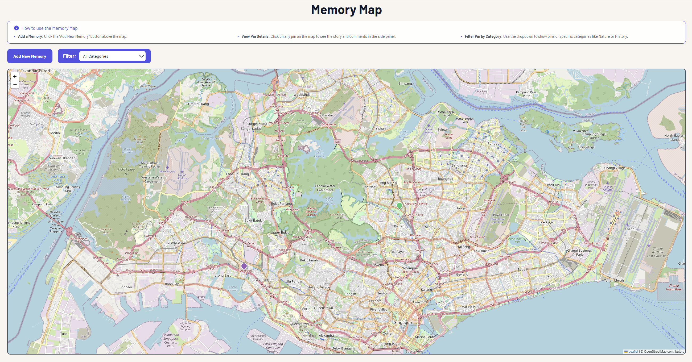

Featured Project
GenLinkSG (Web Development)
Bridging Generations Through the "Memory Map"

Overview
GenLinkSG is a community archive where youth and seniors connect through shared history. The Memory Map allows users to pin stories to specific locations, preserving "vanishing" landmarks through interactive storytelling and a built-in comment system.
My Role: Lead Full-Stack Developer
I engineered the end-to-end "Memory Map" feature, focusing on real-time data flow and intergenerational accessibility:
- Backend: Built a Python (Flask) and SQLite system to manage relational data for users, pins, and comments.
- Frontend: Integrated Leaflet.js for a responsive, coordinate-based map interface.
- API Design: Developed RESTful APIs (HTTP/JSON) to fetch and post data dynamically, ensuring a seamless user experience without page reloads.
Challenges & Solutions
- Performance: Refactored the API to load only pins within the user's current map viewport, significantly reducing latency for high-density areas.
- UX Design: Simplified the pinning process to a "Three-Click" flow with high-contrast UI elements to ensure accessibility for senior users.